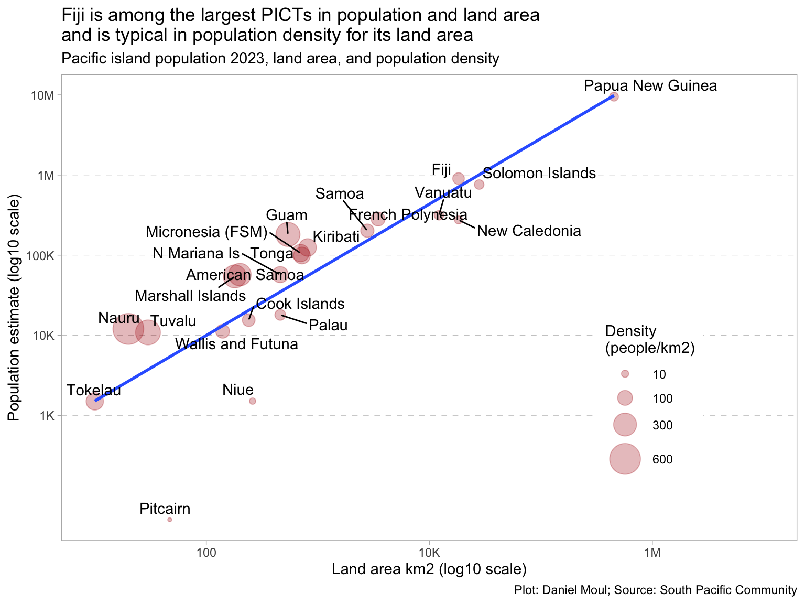
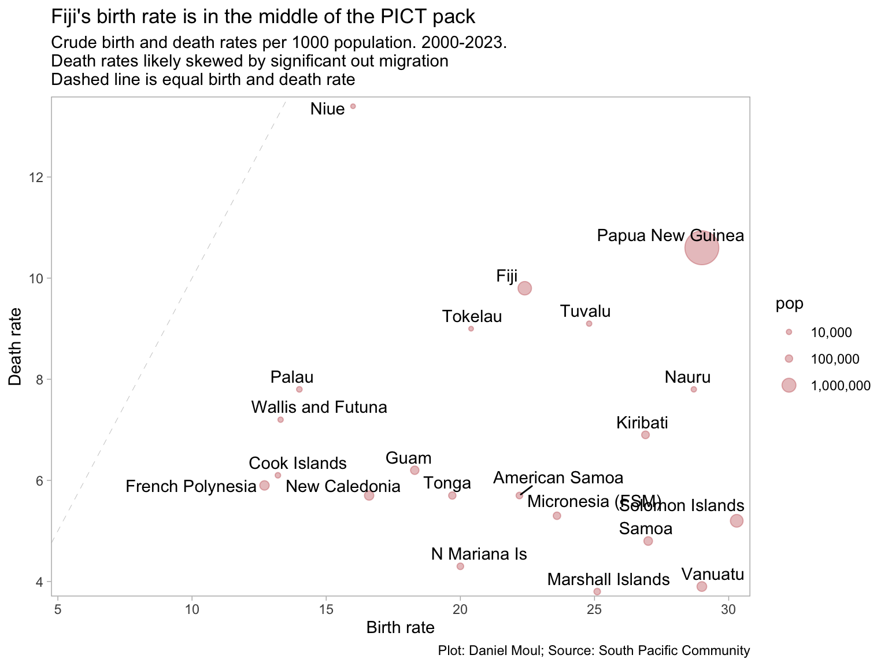

The population and land area of the PICTs vary over four orders of magnitude. Population density is highest on some of the smallest PICTs.
Show the code
d_pop_and_density <- d_pocket |>filter(indicator_2 %in%c("Land area", "Mid-year population estimate")) |>arrange(desc(time_period)) |>distinct(geo_pict, indicator_2, .keep_all =TRUE) |>select(-c(time_period, unit_mult, unit_multiplier, data_year)) |>pivot_wider(id_cols =c(geo_pict, place), names_from = indicator_2, values_from = obs_value) |>clean_names() |>rename(pop = mid_year_population_estimate) |>mutate(pop_density = pop / land_area)d_pop_and_density |>ggplot(aes(land_area, pop)) +geom_hline(yintercept =10^c(3:6),lty =2, linewidth =0.15, alpha =0.3) +geom_point(aes(size = pop_density), color ="firebrick", alpha =0.3) +geom_smooth(se =FALSE, method ="lm", formula ='y ~ x',alpha =0.05) +geom_text_repel(aes(label = place),force =2,hjust =0, vjust =1) +scale_x_log10(labels =label_number(scale_cut =cut_short_scale()), ) +scale_y_log10(labels =label_number(scale_cut =cut_short_scale()),breaks =10^c(3:7)) +scale_size_continuous(range =c(1, 10),breaks =c(10, 100, 300, 600) ) +expand_limits(x =1e7) +guides(size =guide_legend(position ="inside"),color ="none") +theme(legend.position.inside =c(0.8, 0.3)) +labs(title =glue("Fiji is among the largest PICTs in population and land area","\nand is typical in population density for its land area"),subtitle ="Pacific island population 2023, land area, and population density",x ="Land area km2 (log10 scale)",y ="Population estimate (log10 scale)",size ="Density\n(people/km2)",caption = my_caption )

Figure 4.1: Population, land area, and population density
Figure 4.1 above visualizes the data in this table:
Show the code
d_pop_and_density |>arrange(desc(pop_density)) |>mutate(rank =row_number()) |>gt() |>tab_header(md(glue("**Pacific Island land area, population, and population density**","<br>Ranked by population density (people per km2)"))) |>tab_options(table.font.size =10) |>fmt_number(columns =c(land_area, pop, pop_density),decimals =0)
Pacific Island land area, population, and population density
Ranked by population density (people per km2)
geo_pict
place
land_area
pop
pop_density
rank
NR
Nauru
20
12,017
601
1
TV
Tuvalu
30
10,876
363
2
GU
Guam
540
181,468
336
3
MH
Marshall Islands
180
54,366
302
4
AS
American Samoa
200
57,225
286
5
KI
Kiribati
810
124,742
154
6
FM
Micronesia (FSM)
700
106,194
152
7
TK
Tokelau
10
1,500
150
8
TO
Tonga
720
99,026
138
9
MP
N Mariana Is
460
57,154
124
10
PF
French Polynesia
3,471
281,811
81
11
WF
Wallis and Futuna
140
11,231
80
12
WS
Samoa
2,780
202,100
73
13
CK
Cook Islands
240
15,470
64
14
FJ
Fiji
18,270
904,590
50
15
PW
Palau
460
17,989
39
16
SB
Solomon Islands
27,990
761,215
27
17
VU
Vanuatu
12,190
314,653
26
18
PG
Papua New Guinea
452,860
9,501,006
21
19
NC
New Caledonia
18,280
275,315
15
20
NU
Niue
260
1,510
6
21
PN
Pitcairn
47
50
1
22
4.2 Birth and death rates
Show the code
d_rates <- d_pocket |>filter(indicator_2 %in%c("Crude birth rate", "Crude death rate", "Mid-year population estimate")) |>arrange(desc(time_period)) |>distinct(geo_pict, indicator_2, .keep_all =TRUE) |>select(-c(time_period, unit_mult, unit_multiplier, data_year)) |>pivot_wider(id_cols =c(geo_pict, place), names_from = indicator_2, values_from = obs_value) |>clean_names() |>rename(pop = mid_year_population_estimate)d_rates |>ggplot(aes(crude_birth_rate, crude_death_rate)) +geom_abline( lty =2, linewidth =0.15, alpha =0.3) +geom_point(aes(size = , size = pop), color ="firebrick", alpha =0.3,na.rm =TRUE) +geom_text_repel(aes(label = place),force =2,hjust =0, vjust =1,na.rm =TRUE) +scale_x_continuous(expand =expansion(mult =c(0.01, 0.02)) ) +scale_y_continuous(expand =expansion(mult =c(0.01, 0.02))) +scale_size_continuous(range =c(1, 10),labels = comma,breaks =c(1e4, 1e5, 1e6) ) +expand_limits(x =5, y =5) +labs(title ="Fiji's birth rate is in the middle of the PICT pack",subtitle =glue("Crude birth and death d_rates per 1000 population. 2000-2023.","\nDashed line is equal birth and death rate","\nDeath d_rates likely skewed by significant out migration"),x ="Birth rate",y ="Death rate",caption = my_caption )

Figure 4.2: Crude birth and death rates
4.3 Life expectancy at birth
Among PICTs life expectancy varies considerably, and changes since 2000 have not been universally positive–even before considering the impact of COVID-19.
Figure 4.5: Exports and imports in USD - latest year available
Most PICTs importing good worth at least USD100M annually, import and export value (or rate of growth) varies within a small range. The big exceptions (see the long trails in Figure 4.6) are the following:
Papua New Guinea, where petroleum and mining are the source of most export value.
The Northern Mariana Islands, where the significant drop in exports likely is due to the garment industry drying up.2
Solomon Islands, where imports and exports grew dramatically, possible due to foreign investment in mining and other resource extractive industries.3
The pocket summary includes metrics not explored above. I list them all below, in case you wish to dig into them yourself:
Show the code
d_pocket |>summarize(n_countries =n_distinct(geo_pict),.by =c(indicator, indicator_2) ) |>arrange(indicator) |>mutate(idx =row_number()) |>gt() |>tab_header(md("**Metrics in 'pocket summary' dataset from the SPC**")) |>tab_options(table.font.size =10)
Metrics in ‘pocket summary’ dataset from the SPC
indicator
indicator_2
n_countries
idx
CBR
Crude birth rate
21
1
CDR
Crude death rate
21
2
DEPRATIO
Dependency Ratio (15-59)
21
3
EEZ
EEZ area
22
4
EXPUSD
Exports
22
5
GDPCDOM
GDP, current prices, in local currency units
22
6
GDPCPCUSD
GDP, per capita, in USD
22
7
GDPCUSD
GDP, current price, in USD
22
8
GOVEXPGDPC
Goverment revenue as percent of GDP (current prices)
18
9
GOVREVGDPC
Goverment expenditure as percent of GDP (current prices)
20
10
HGT
Max height above sea level
22
11
IMPUSD
Imports
22
12
IMR
Infant mortality rate
21
13
INFRATE
Inflation rate
21
14
LAR
Land area
22
15
LEBF
Life expectancy at birth - Female
21
16
LEBM
Life expectancy at birth - Male
21
17
MEDIANAGE
Median age
21
18
MIDYEARPOPEST
Mid-year population estimate
22
19
OSV
Overseas Visitors
21
20
POPCHILD
Children (<14)
21
21
POPDENS
Population density
22
22
POPELDER
Elderly (60+)
21
23
POPYGR
Annual growth rate
22
24
POPYOUTH
Youth (15-24)
21
25
TFR
Total fertility rate
21
26
TNFR
Teenage fertility rate (15-19)
21
27
TRADEBALUSD
Trade balance
22
28
The pocket summary presents a consolidated view of a set of key figures for Pacific island countries and territories (PICTs). Pocket summary (latest available value per year). Identifier: SPC:DF_POCKET(3.0), Modified: 2023-12-20, Temporal Coverage From: 2000-01-01, Temporal Coverage To: 2023-12-31, Publisher Name: SPC https://pacificdata.org/data/dataset/pocket-summary-latest-available-value-per-year-df-pocket Downloaded 2024-06-16↩︎